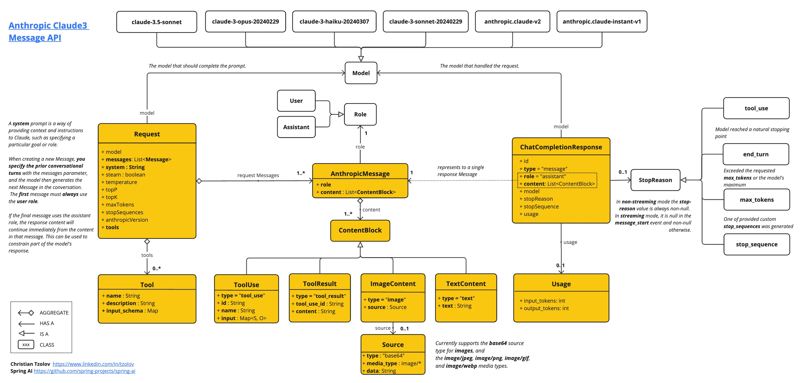
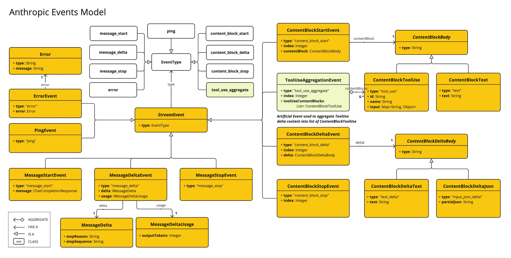

Anthropic Chat
Anthropic Claude is a family of foundational AI models that can be used in a variety of applications. For developers and businesses, you can leverage the API access and build directly on top of Anthropic’s AI infrastructure.
Spring AI supports the Anthropic Messaging API for sync and streaming text generations.
| Anthropic’s Claude models are also available through Amazon Bedrock Converse. Spring AI provides dedicated Amazon Bedrock Converse Anthropic client implementations as well. |
Prerequisites
You will need to create an API key on the Anthropic portal.
Create an account at Anthropic API dashboard and generate the API key on the Get API Keys page.
The Spring AI project defines a configuration property named spring.ai.anthropic.api-key that you should set to the value of the API Key obtained from anthropic.com.
You can set this configuration property in your application.properties file:
spring.ai.anthropic.api-key=<your-anthropic-api-key>For enhanced security when handling sensitive information like API keys, you can use Spring Expression Language (SpEL) to reference a custom environment variable:
# In application.yml
spring:
ai:
anthropic:
api-key: ${ANTHROPIC_API_KEY}# In your environment or .env file
export ANTHROPIC_API_KEY=<your-anthropic-api-key>You can also get this configuration programmatically in your application code:
// Retrieve API key from a secure source or environment variable
String apiKey = System.getenv("ANTHROPIC_API_KEY");Add Repositories and BOM
Spring AI artifacts are published in Maven Central and Spring Snapshot repositories. Refer to the Artifact Repositories section to add these repositories to your build system.
To help with dependency management, Spring AI provides a BOM (bill of materials) to ensure that a consistent version of Spring AI is used throughout the entire project. Refer to the Dependency Management section to add the Spring AI BOM to your build system.
Auto-configuration
|
There has been a significant change in the Spring AI auto-configuration, starter modules' artifact names. Please refer to the upgrade notes for more information. |
Spring AI provides Spring Boot auto-configuration for the Anthropic Chat Client.
To enable it add the following dependency to your project’s Maven pom.xml or Gradle build.gradle file:
-
Maven
-
Gradle
<dependency>
<groupId>org.springframework.ai</groupId>
<artifactId>spring-ai-starter-model-anthropic</artifactId>
</dependency>dependencies {
implementation 'org.springframework.ai:spring-ai-starter-model-anthropic'
}| Refer to the Dependency Management section to add the Spring AI BOM to your build file. |
Chat Properties
Retry Properties
The prefix spring.ai.retry is used as the property prefix that lets you configure the retry mechanism for the Anthropic chat model.
| Property | Description | Default |
|---|---|---|
spring.ai.retry.max-attempts |
Maximum number of retry attempts. |
10 |
spring.ai.retry.backoff.initial-interval |
Initial sleep duration for the exponential backoff policy. |
2 sec. |
spring.ai.retry.backoff.multiplier |
Backoff interval multiplier. |
5 |
spring.ai.retry.backoff.max-interval |
Maximum backoff duration. |
3 min. |
spring.ai.retry.on-client-errors |
If false, throw a NonTransientAiException, and do not attempt retry for |
false |
spring.ai.retry.exclude-on-http-codes |
List of HTTP status codes that should NOT trigger a retry (e.g. to throw NonTransientAiException). |
empty |
spring.ai.retry.on-http-codes |
List of HTTP status codes that should trigger a retry (e.g. to throw TransientAiException). |
empty |
| currently the retry policies are not applicable for the streaming API. |
Connection Properties
The prefix spring.ai.anthropic is used as the property prefix that lets you connect to Anthropic.
| Property | Description | Default |
|---|---|---|
spring.ai.anthropic.base-url |
The URL to connect to |
|
spring.ai.anthropic.completions-path |
The path to append to the base URL. |
|
spring.ai.anthropic.version |
Anthropic API version |
2023-06-01 |
spring.ai.anthropic.api-key |
The API Key |
- |
spring.ai.anthropic.beta-version |
Enables new/experimental features. If set to |
|
Configuration Properties
|
Enabling and disabling of the chat auto-configurations are now configured via top level properties with the prefix To enable, spring.ai.model.chat=anthropic (It is enabled by default) To disable, spring.ai.model.chat=none (or any value which doesn’t match anthropic) This change is done to allow configuration of multiple models. |
The prefix spring.ai.anthropic.chat is the property prefix that lets you configure the chat model implementation for Anthropic.
| Property | Description | Default |
|---|---|---|
spring.ai.anthropic.chat.enabled (Removed and no longer valid) |
Enable Anthropic chat model. |
true |
spring.ai.model.chat |
Enable Anthropic chat model. |
anthropic |
spring.ai.anthropic.chat.options.model |
This is the Anthropic Chat model to use. Supports: |
|
spring.ai.anthropic.chat.options.temperature |
The sampling temperature to use that controls the apparent creativity of generated completions. Higher values will make output more random while lower values will make results more focused and deterministic. It is not recommended to modify temperature and top_p for the same completions request as the interaction of these two settings is difficult to predict. |
0.8 |
spring.ai.anthropic.chat.options.max-tokens |
The maximum number of tokens to generate in the chat completion. The total length of input tokens and generated tokens is limited by the model’s context length. |
500 |
spring.ai.anthropic.chat.options.stop-sequence |
Custom text sequences that will cause the model to stop generating. Our models will normally stop when they have naturally completed their turn, which will result in a response stop_reason of "end_turn". If you want the model to stop generating when it encounters custom strings of text, you can use the stop_sequences parameter. If the model encounters one of the custom sequences, the response stop_reason value will be "stop_sequence" and the response stop_sequence value will contain the matched stop sequence. |
- |
spring.ai.anthropic.chat.options.top-p |
Use nucleus sampling. In nucleus sampling, we compute the cumulative distribution over all the options for each subsequent token in decreasing probability order and cut it off once it reaches a particular probability specified by top_p. You should either alter temperature or top_p, but not both. Recommended for advanced use cases only. You usually only need to use temperature. |
- |
spring.ai.anthropic.chat.options.top-k |
Only sample from the top K options for each subsequent token. Used to remove "long tail" low probability responses. Learn more technical details here. Recommended for advanced use cases only. You usually only need to use temperature. |
- |
spring.ai.anthropic.chat.options.tool-names |
List of tools, identified by their names, to enable for tool calling in a single prompt requests. Tools with those names must exist in the toolCallbacks registry. |
- |
spring.ai.anthropic.chat.options.tool-callbacks |
Tool Callbacks to register with the ChatModel. |
- |
spring.ai.anthropic.chat.options.toolChoice |
Controls which (if any) tool is called by the model. |
- |
spring.ai.anthropic.chat.options.internal-tool-execution-enabled |
If false, the Spring AI will not handle the tool calls internally, but will proxy them to the client. Then it is the client’s responsibility to handle the tool calls, dispatch them to the appropriate function, and return the results. If true (the default), the Spring AI will handle the function calls internally. Applicable only for chat models with function calling support |
true |
spring.ai.anthropic.chat.options.http-headers |
Optional HTTP headers to be added to the chat completion request. |
- |
| For the latest list of model aliases and their descriptions, see the official Anthropic model aliases documentation. |
All properties prefixed with spring.ai.anthropic.chat.options can be overridden at runtime by adding a request specific Runtime Options to the Prompt call.
|
Runtime Options
The AnthropicChatOptions.java provides model configurations, such as the model to use, the temperature, the max token count, etc.
On start-up, the default options can be configured with the AnthropicChatModel(api, options) constructor or the spring.ai.anthropic.chat.options.* properties.
At run-time you can override the default options by adding new, request specific, options to the Prompt call.
For example to override the default model and temperature for a specific request:
ChatResponse response = chatModel.call(
new Prompt(
"Generate the names of 5 famous pirates.",
AnthropicChatOptions.builder()
.model("claude-3-7-sonnet-latest")
.temperature(0.4)
.build()
));| In addition to the model specific AnthropicChatOptions you can use a portable ChatOptions instance, created with the ChatOptions#builder(). |
Prompt Caching
Anthropic’s prompt caching feature allows you to cache frequently used prompts to reduce costs and improve response times for repeated interactions. When you cache a prompt, subsequent identical requests can reuse the cached content, significantly reducing the number of input tokens processed.
|
Supported Models Prompt caching is currently supported on Claude Sonnet 4.5, Claude Opus 4.5, Claude Haiku 4.5, Claude Opus 4, Claude Sonnet 4, Claude Sonnet 3.7, Claude Sonnet 3.5, Claude Haiku 3.5, Claude Haiku 3, and Claude Opus 3. Token Requirements Different models have different minimum token thresholds for cache effectiveness: - Claude Sonnet 4: 1024+ tokens - Claude Haiku models: 2048+ tokens - Other models: 1024+ tokens |
Cache Strategies
Spring AI provides strategic cache placement through the AnthropicCacheStrategy enum.
Each strategy automatically places cache breakpoints at optimal locations while staying within Anthropic’s 4-breakpoint limit.
| Strategy | Breakpoints Used | Use Case |
|---|---|---|
|
0 |
Disables prompt caching completely. Use when requests are one-off or content is too small to benefit from caching. |
|
1 |
Caches system message content. Tools are cached implicitly via Anthropic’s automatic ~20-block lookback mechanism. Use when system prompts are large and stable with fewer than 20 tools. |
|
1 |
Caches tool definitions only. System messages remain uncached and are processed fresh on each request. Use when tool definitions are large and stable (5000+ tokens) but system prompts change frequently or vary per tenant/context. |
|
2 |
Caches both tool definitions (breakpoint 1) and system message (breakpoint 2) explicitly. Use when you have 20+ tools (beyond automatic lookback) or want deterministic caching of both components. System changes don’t invalidate tool cache. |
|
1-4 |
Caches entire conversation history up to the current user question. Use for multi-turn conversations with chat memory where conversation history grows over time. |
Due to Anthropic’s cascade invalidation, changing tool definitions will invalidate ALL downstream cache breakpoints (system, messages).
Tool stability is critical when using SYSTEM_AND_TOOLS or CONVERSATION_HISTORY strategies.
|
Enabling Prompt Caching
Enable prompt caching by setting cacheOptions on AnthropicChatOptions and choosing a strategy.
System-Only Caching
Best for: Stable system prompts with <20 tools (tools cached implicitly via automatic lookback).
// Cache system message content (tools cached implicitly)
ChatResponse response = chatModel.call(
new Prompt(
List.of(
new SystemMessage("You are a helpful AI assistant with extensive knowledge..."),
new UserMessage("What is machine learning?")
),
AnthropicChatOptions.builder()
.model("claude-sonnet-4")
.cacheOptions(AnthropicCacheOptions.builder()
.strategy(AnthropicCacheStrategy.SYSTEM_ONLY)
.build())
.maxTokens(500)
.build()
)
);Tools-Only Caching
Best for: Large stable tool sets with dynamic system prompts (multi-tenant apps, A/B testing).
// Cache tool definitions, system prompt processed fresh each time
ChatResponse response = chatModel.call(
new Prompt(
List.of(
new SystemMessage("You are a " + persona + " assistant..."), // Dynamic per-tenant
new UserMessage("What's the weather like in San Francisco?")
),
AnthropicChatOptions.builder()
.model("claude-sonnet-4")
.cacheOptions(AnthropicCacheOptions.builder()
.strategy(AnthropicCacheStrategy.TOOLS_ONLY)
.build())
.toolCallbacks(weatherToolCallback) // Large tool set cached
.maxTokens(500)
.build()
)
);System and Tools Caching
Best for: 20+ tools (beyond automatic lookback) or when both components should be cached independently.
// Cache both tool definitions and system message with independent breakpoints
// Changing system won't invalidate tool cache (but changing tools invalidates both)
ChatResponse response = chatModel.call(
new Prompt(
List.of(
new SystemMessage("You are a weather analysis assistant..."),
new UserMessage("What's the weather like in San Francisco?")
),
AnthropicChatOptions.builder()
.model("claude-sonnet-4")
.cacheOptions(AnthropicCacheOptions.builder()
.strategy(AnthropicCacheStrategy.SYSTEM_AND_TOOLS)
.build())
.toolCallbacks(weatherToolCallback) // 20+ tools
.maxTokens(500)
.build()
)
);Conversation History Caching
// Cache conversation history with ChatClient and memory (cache breakpoint on last user message)
ChatClient chatClient = ChatClient.builder(chatModel)
.defaultSystem("You are a personalized career counselor...")
.defaultAdvisors(MessageChatMemoryAdvisor.builder(chatMemory)
.conversationId(conversationId)
.build())
.build();
String response = chatClient.prompt()
.user("What career advice would you give me?")
.options(AnthropicChatOptions.builder()
.model("claude-sonnet-4")
.cacheOptions(AnthropicCacheOptions.builder()
.strategy(AnthropicCacheStrategy.CONVERSATION_HISTORY)
.build())
.maxTokens(500)
.build())
.call()
.content();Using ChatClient Fluent API
String response = ChatClient.create(chatModel)
.prompt()
.system("You are an expert document analyst...")
.user("Analyze this large document: " + document)
.options(AnthropicChatOptions.builder()
.model("claude-sonnet-4")
.cacheOptions(AnthropicCacheOptions.builder()
.strategy(AnthropicCacheStrategy.SYSTEM_ONLY)
.build())
.build())
.call()
.content();Advanced Caching Options
Per-Message TTL (5m or 1h)
By default, cached content uses a 5-minute TTL. You can set a 1-hour TTL for specific message types. When 1-hour TTL is used, Spring AI automatically sets the required Anthropic beta header.
ChatResponse response = chatModel.call(
new Prompt(
List.of(new SystemMessage(largeSystemPrompt)),
AnthropicChatOptions.builder()
.model("claude-sonnet-4")
.cacheOptions(AnthropicCacheOptions.builder()
.strategy(AnthropicCacheStrategy.SYSTEM_ONLY)
.messageTypeTtl(MessageType.SYSTEM, AnthropicCacheTtl.ONE_HOUR)
.build())
.maxTokens(500)
.build()
)
);
Extended TTL uses Anthropic beta feature extended-cache-ttl-2025-04-11.
|
Cache Eligibility Filters
Control when cache breakpoints are used by setting minimum content lengths and an optional token-based length function:
AnthropicCacheOptions cache = AnthropicCacheOptions.builder()
.strategy(AnthropicCacheStrategy.CONVERSATION_HISTORY)
.messageTypeMinContentLength(MessageType.SYSTEM, 1024)
.messageTypeMinContentLength(MessageType.USER, 1024)
.messageTypeMinContentLength(MessageType.ASSISTANT, 1024)
.contentLengthFunction(text -> MyTokenCounter.count(text))
.build();
ChatResponse response = chatModel.call(
new Prompt(
List.of(/* messages */),
AnthropicChatOptions.builder()
.model("claude-sonnet-4")
.cacheOptions(cache)
.build()
)
);
Tool Definitions are always considered for caching if SYSTEM_AND_TOOLS strategy is used, regardless of content length.
|
Multi-Block System Message Caching
When using advisors (e.g., RAG context injection), your system prompt may consist of multiple SystemMessage instances: a static prefix (your base instructions) and a dynamic suffix (advisor-injected context that changes each request).
By default, all SystemMessage instances are joined into a single content block with one cache_control marker.
If any part of that content changes between requests, the entire block is treated as a cache miss — resulting in a 1.25x write cost penalty instead of the 0.1x cache read discount.
The multiBlockSystemCaching option solves this by emitting each SystemMessage as a separate content block in the Anthropic API system array.
The cache_control marker is placed on the second-to-last block (end of the static prefix), so the static portion remains cached even as the last block (dynamic content) changes freely.
Configuration
AnthropicCacheOptions cacheOptions = AnthropicCacheOptions.builder()
.strategy(AnthropicCacheStrategy.SYSTEM_ONLY)
.multiBlockSystemCaching(true)
.build();
AnthropicChatOptions options = AnthropicChatOptions.builder()
.cacheOptions(cacheOptions)
.build();
// Static system prompt (will be cached)
SystemMessage staticPrompt = new SystemMessage("You are an expert assistant...");
// Dynamic RAG context (injected by advisor, changes each request)
SystemMessage dynamicContext = new SystemMessage("Relevant context: " + ragResults);
Prompt prompt = new Prompt(List.of(staticPrompt, dynamicContext, new UserMessage("...")), options);This produces the following wire format:
{
"system": [
{"type": "text", "text": "You are an expert assistant...", "cache_control": {"type": "ephemeral"}},
{"type": "text", "text": "Relevant context: ..."}
]
}
If only a single SystemMessage is present, it still gets cache_control applied (same as the default behavior).
The multiBlockSystemCaching option only changes behavior when there are two or more system messages.
|
Message ordering matters. The cache_control marker is always placed on the second-to-last system block, so static content must come before dynamic content in the message list. If you register your base instructions as the first SystemMessage and let advisors append dynamic context after, this ordering is naturally satisfied.
|
Usage Example
Here’s a complete example demonstrating prompt caching with cost tracking:
// Create system content that will be reused multiple times
String largeSystemPrompt = "You are an expert software architect specializing in distributed systems...";
// First request - creates cache
ChatResponse firstResponse = chatModel.call(
new Prompt(
List.of(
new SystemMessage(largeSystemPrompt),
new UserMessage("What is microservices architecture?")
),
AnthropicChatOptions.builder()
.model("claude-sonnet-4")
.cacheOptions(AnthropicCacheOptions.builder()
.strategy(AnthropicCacheStrategy.SYSTEM_ONLY)
.build())
.maxTokens(500)
.build()
)
);
// Access cache-related token usage
AnthropicApi.Usage firstUsage = (AnthropicApi.Usage) firstResponse.getMetadata()
.getUsage().getNativeUsage();
System.out.println("Cache creation tokens: " + firstUsage.cacheCreationInputTokens());
System.out.println("Cache read tokens: " + firstUsage.cacheReadInputTokens());
// Second request with same system prompt - reads from cache
ChatResponse secondResponse = chatModel.call(
new Prompt(
List.of(
new SystemMessage(largeSystemPrompt),
new UserMessage("What are the benefits of event sourcing?")
),
AnthropicChatOptions.builder()
.model("claude-sonnet-4")
.cacheOptions(AnthropicCacheOptions.builder()
.strategy(AnthropicCacheStrategy.SYSTEM_ONLY)
.build())
.maxTokens(500)
.build()
)
);
AnthropicApi.Usage secondUsage = (AnthropicApi.Usage) secondResponse.getMetadata()
.getUsage().getNativeUsage();
System.out.println("Cache creation tokens: " + secondUsage.cacheCreationInputTokens()); // Should be 0
System.out.println("Cache read tokens: " + secondUsage.cacheReadInputTokens()); // Should be > 0Token Usage Tracking
The Usage record provides detailed information about cache-related token consumption.
To access Anthropic-specific cache metrics, use the getNativeUsage() method:
AnthropicApi.Usage usage = (AnthropicApi.Usage) response.getMetadata()
.getUsage().getNativeUsage();Cache-specific metrics include:
-
cacheCreationInputTokens(): Returns the number of tokens used when creating a cache entry -
cacheReadInputTokens(): Returns the number of tokens read from an existing cache entry
When you first send a cached prompt:
- cacheCreationInputTokens() will be greater than 0
- cacheReadInputTokens() will be 0
When you send the same cached prompt again:
- cacheCreationInputTokens() will be 0
- cacheReadInputTokens() will be greater than 0
Real-World Use Cases
Legal Document Analysis
Analyze large legal contracts or compliance documents efficiently by caching document content across multiple questions:
// Load a legal contract (PDF or text)
String legalContract = loadDocument("merger-agreement.pdf"); // ~3000 tokens
// System prompt with legal expertise
String legalSystemPrompt = "You are an expert legal analyst specializing in corporate law. " +
"Analyze the following contract and provide precise answers about terms, obligations, and risks: " +
legalContract;
// First analysis - creates cache
ChatResponse riskAnalysis = chatModel.call(
new Prompt(
List.of(
new SystemMessage(legalSystemPrompt),
new UserMessage("What are the key termination clauses and associated penalties?")
),
AnthropicChatOptions.builder()
.model("claude-sonnet-4")
.cacheOptions(AnthropicCacheOptions.builder()
.strategy(AnthropicCacheStrategy.SYSTEM_ONLY)
.build())
.maxTokens(1000)
.build()
)
);
// Subsequent questions reuse cached document - 90% cost savings
ChatResponse obligationAnalysis = chatModel.call(
new Prompt(
List.of(
new SystemMessage(legalSystemPrompt), // Same content - cache hit
new UserMessage("List all financial obligations and payment schedules.")
),
AnthropicChatOptions.builder()
.model("claude-sonnet-4")
.cacheOptions(AnthropicCacheOptions.builder()
.strategy(AnthropicCacheStrategy.SYSTEM_ONLY)
.build())
.maxTokens(1000)
.build()
)
);Batch Code Review
Process multiple code files with consistent review criteria while caching the review guidelines:
// Define comprehensive code review guidelines
String reviewGuidelines = """
You are a senior software engineer conducting code reviews. Apply these criteria:
- Security vulnerabilities and best practices
- Performance optimizations and memory usage
- Code maintainability and readability
- Testing coverage and edge cases
- Design patterns and architecture compliance
""";
List<String> codeFiles = Arrays.asList(
"UserService.java", "PaymentController.java", "SecurityConfig.java"
);
List<String> reviews = new ArrayList<>();
for (String filename : codeFiles) {
String sourceCode = loadSourceFile(filename);
ChatResponse review = chatModel.call(
new Prompt(
List.of(
new SystemMessage(reviewGuidelines), // Cached across all reviews
new UserMessage("Review this " + filename + " code:\n\n" + sourceCode)
),
AnthropicChatOptions.builder()
.model("claude-sonnet-4")
.cacheOptions(AnthropicCacheOptions.builder()
.strategy(AnthropicCacheStrategy.SYSTEM_ONLY)
.build())
.maxTokens(800)
.build()
)
);
reviews.add(review.getResult().getOutput().getText());
}
// Guidelines cached after first request, subsequent reviews are faster and cheaperMulti-Tenant SaaS with Shared Tools
Build a multi-tenant application where tools are shared but system prompts are customized per tenant:
// Define large shared tool set (used by all tenants)
List<FunctionCallback> sharedTools = Arrays.asList(
weatherToolCallback, // ~500 tokens
calendarToolCallback, // ~800 tokens
emailToolCallback, // ~700 tokens
analyticsToolCallback, // ~600 tokens
reportingToolCallback, // ~900 tokens
// ... 20+ more tools, totaling 5000+ tokens
);
@Service
public class MultiTenantAIService {
public String handleTenantRequest(String tenantId, String userQuery) {
// Get tenant-specific configuration
TenantConfig config = tenantRepository.findById(tenantId);
// Dynamic system prompt per tenant
String tenantSystemPrompt = String.format("""
You are %s's AI assistant. Company values: %s.
Brand voice: %s. Compliance requirements: %s.
""", config.companyName(), config.values(),
config.brandVoice(), config.compliance());
ChatResponse response = chatModel.call(
new Prompt(
List.of(
new SystemMessage(tenantSystemPrompt), // Different per tenant, NOT cached
new UserMessage(userQuery)
),
AnthropicChatOptions.builder()
.model("claude-sonnet-4")
.cacheOptions(AnthropicCacheOptions.builder()
.strategy(AnthropicCacheStrategy.TOOLS_ONLY) // Cache tools only
.build())
.toolCallbacks(sharedTools) // Cached once, shared across all tenants
.maxTokens(800)
.build()
)
);
return response.getResult().getOutput().getText();
}
}
// Tools cached once (5000 tokens @ 10% = 500 token cost for cache hits)
// Each tenant's unique system prompt processed fresh (200-500 tokens @ 100%)
// Total per request: ~700-1000 tokens vs 5500+ without TOOLS_ONLYCustomer Support with Knowledge Base
Create a customer support system that caches your product knowledge base for consistent, accurate responses:
// Load comprehensive product knowledge
String knowledgeBase = """
PRODUCT DOCUMENTATION:
- API endpoints and authentication methods
- Common troubleshooting procedures
- Billing and subscription details
- Integration guides and examples
- Known issues and workarounds
""" + loadProductDocs(); // ~2500 tokens
@Service
public class CustomerSupportService {
public String handleCustomerQuery(String customerQuery, String customerId) {
ChatResponse response = chatModel.call(
new Prompt(
List.of(
new SystemMessage("You are a helpful customer support agent. " +
"Use this knowledge base to provide accurate solutions: " + knowledgeBase),
new UserMessage("Customer " + customerId + " asks: " + customerQuery)
),
AnthropicChatOptions.builder()
.model("claude-sonnet-4")
.cacheOptions(AnthropicCacheOptions.builder()
.strategy(AnthropicCacheStrategy.SYSTEM_ONLY)
.build())
.maxTokens(600)
.build()
)
);
return response.getResult().getOutput().getText();
}
}
// Knowledge base is cached across all customer queries
// Multiple support agents can benefit from the same cached contentBest Practices
-
Choose the Right Strategy:
-
Use
SYSTEM_ONLYfor stable system prompts with <20 tools (tools cached implicitly via automatic lookback) -
Use
TOOLS_ONLYfor large stable tool sets (5000+ tokens) with dynamic system prompts (multi-tenant, A/B testing) -
Use
SYSTEM_AND_TOOLSwhen you have 20+ tools (beyond automatic lookback) or want both cached independently -
Use
CONVERSATION_HISTORYwith ChatClient memory for multi-turn conversations -
Use
NONEto explicitly disable caching
-
-
Understand Cascade Invalidation: Anthropic’s cache hierarchy (
tools → system → messages) means changes flow downward:-
Changing tools invalidates: tools + system + messages (all caches) ❌❌❌
-
Changing system invalidates: system + messages (tools cache remains valid) ✅❌❌
-
Changing messages invalidates: messages only (tools and system caches remain valid) ✅✅❌
**Tool stability is critical** when using `SYSTEM_AND_TOOLS` or `CONVERSATION_HISTORY` strategies.
-
-
SYSTEM_AND_TOOLS Independence: With
SYSTEM_AND_TOOLS, changing the system message does NOT invalidate the tool cache, allowing efficient reuse of cached tools even when system prompts vary. -
Meet Token Requirements: Focus on caching content that meets the minimum token requirements (1024+ tokens for Sonnet 4, 2048+ for Haiku models).
-
Reuse Identical Content: Caching works best with exact matches of prompt content. Even small changes will require a new cache entry.
-
Monitor Token Usage: Use the cache usage statistics to track cache effectiveness:
java AnthropicApi.Usage usage = (AnthropicApi.Usage) response.getMetadata().getUsage().getNativeUsage(); if (usage != null) { System.out.println("Cache creation: " + usage.cacheCreationInputTokens()); System.out.println("Cache read: " + usage.cacheReadInputTokens()); } -
Strategic Cache Placement: The implementation automatically places cache breakpoints at optimal locations based on your chosen strategy, ensuring compliance with Anthropic’s 4-breakpoint limit.
-
Cache Lifetime: Default TTL is 5 minutes; set 1-hour TTL per message type via
messageTypeTtl(…). Each cache access resets the timer. -
Tool Caching Limitations: Be aware that tool-based interactions may not provide cache usage metadata in the response.
Implementation Details
The prompt caching implementation in Spring AI follows these key design principles:
-
Strategic Cache Placement: Cache breakpoints are automatically placed at optimal locations based on the chosen strategy, ensuring compliance with Anthropic’s 4-breakpoint limit.
-
CONVERSATION_HISTORYplaces cache breakpoints on: tools (if present), system message, and the last user message -
This enables Anthropic’s prefix matching to incrementally cache the growing conversation history
-
Each turn builds on the previous cached prefix, maximizing cache reuse
-
-
Provider Portability: Cache configuration is done through
AnthropicChatOptionsrather than individual messages, preserving compatibility when switching between different AI providers. -
Thread Safety: The cache breakpoint tracking is implemented with thread-safe mechanisms to handle concurrent requests correctly.
-
Automatic Content Ordering: The implementation ensures proper on-the-wire ordering of JSON content blocks and cache controls according to Anthropic’s API requirements.
-
Aggregate Eligibility Checking: For
CONVERSATION_HISTORY, the implementation considers all message types (user, assistant, tool) within the last ~20 content blocks when determining if the combined content meets the minimum token threshold for caching.
Future Enhancements
The current cache strategies are designed to handle 90% of common use cases effectively. For applications requiring more granular control, future enhancements may include:
-
Message-level cache control for fine-grained breakpoint placement
-
Multi-block content caching within individual messages (see Multi-Block System Message Caching for system messages)
-
Advanced cache boundary selection for complex tool scenarios
-
Mixed TTL strategies for optimized cache hierarchies
These enhancements will maintain full backward compatibility while unlocking Anthropic’s complete prompt caching capabilities for specialized use cases.
Thinking
Anthropic Claude models support a "thinking" feature that allows the model to show its reasoning process before providing a final answer. This feature enables more transparent and detailed problem-solving, particularly for complex questions that require step-by-step reasoning.
|
Supported Models The thinking feature is supported by the following Claude models:
Model capabilities:
API request structure is the same across all supported models, but output behavior varies. |
Thinking Configuration
To enable thinking on any supported Claude model, include the following configuration in your request:
Required Configuration
-
Add the
thinkingobject:-
"type": "enabled" -
budget_tokens: Token limit for reasoning (recommend starting at 1024)
-
-
Token budget rules:
-
budget_tokensmust typically be less thanmax_tokens -
Claude may use fewer tokens than allocated
-
Larger budgets increase depth of reasoning but may impact latency
-
When using tool use with interleaved thinking (Claude 4 only), this constraint is relaxed, but not yet supported in Spring AI.
-
Key Considerations
-
Claude 3.7 returns full thinking content in the response
-
Claude 4 returns a summarized version of the model’s internal reasoning to reduce latency and protect sensitive content
-
Thinking tokens are billable as part of output tokens (even if not all are visible in response)
-
Interleaved Thinking is only available on Claude 4 models and requires the beta header
interleaved-thinking-2025-05-14
Tool Integration and Interleaved Thinking
Claude 4 models support interleaved thinking with tool use, allowing the model to reason between tool calls.
|
The current Spring AI implementation supports basic thinking and tool use separately, but does not yet support interleaved thinking with tool use (where thinking continues across multiple tool calls). |
For details on interleaved thinking with tool use, see the Anthropic documentation.
Non-streaming Example
Here’s how to enable thinking in a non-streaming request using the ChatClient API:
ChatClient chatClient = ChatClient.create(chatModel);
// For Claude 3.7 Sonnet - explicit thinking configuration required
ChatResponse response = chatClient.prompt()
.options(AnthropicChatOptions.builder()
.model("claude-3-7-sonnet-latest")
.temperature(1.0) // Temperature should be set to 1 when thinking is enabled
.maxTokens(8192)
.thinking(AnthropicApi.ThinkingType.ENABLED, 2048) // Must be ≥1024 && < max_tokens
.build())
.user("Are there an infinite number of prime numbers such that n mod 4 == 3?")
.call()
.chatResponse();
// For Claude 4 models - thinking is enabled by default
ChatResponse response4 = chatClient.prompt()
.options(AnthropicChatOptions.builder()
.model("claude-opus-4-0")
.maxTokens(8192)
// No explicit thinking configuration needed
.build())
.user("Are there an infinite number of prime numbers such that n mod 4 == 3?")
.call()
.chatResponse();
// Process the response which may contain thinking content
for (Generation generation : response.getResults()) {
AssistantMessage message = generation.getOutput();
if (message.getText() != null) {
// Regular text response
System.out.println("Text response: " + message.getText());
}
else if (message.getMetadata().containsKey("signature")) {
// Thinking content
System.out.println("Thinking: " + message.getMetadata().get("thinking"));
System.out.println("Signature: " + message.getMetadata().get("signature"));
}
}Streaming Example
You can also use thinking with streaming responses:
ChatClient chatClient = ChatClient.create(chatModel);
// For Claude 3.7 Sonnet - explicit thinking configuration
Flux<ChatResponse> responseFlux = chatClient.prompt()
.options(AnthropicChatOptions.builder()
.model("claude-3-7-sonnet-latest")
.temperature(1.0)
.maxTokens(8192)
.thinking(AnthropicApi.ThinkingType.ENABLED, 2048)
.build())
.user("Are there an infinite number of prime numbers such that n mod 4 == 3?")
.stream();
// For Claude 4 models - thinking is enabled by default
Flux<ChatResponse> responseFlux4 = chatClient.prompt()
.options(AnthropicChatOptions.builder()
.model("claude-opus-4-0")
.maxTokens(8192)
// No explicit thinking configuration needed
.build())
.user("Are there an infinite number of prime numbers such that n mod 4 == 3?")
.stream();
// For streaming, you might want to collect just the text responses
String textContent = responseFlux.collectList()
.block()
.stream()
.map(ChatResponse::getResults)
.flatMap(List::stream)
.map(Generation::getOutput)
.map(AssistantMessage::getText)
.filter(text -> text != null && !text.isBlank())
.collect(Collectors.joining());Tool Use Integration
Claude 4 models integrate thinking and tool use capabilities:
-
Claude 3.7 Sonnet: Supports both thinking and tool use, but they operate separately and require more explicit configuration
-
Claude 4 models: Natively interleave thinking and tool use, providing deeper reasoning during tool interactions
Benefits of Using Thinking
The thinking feature provides several benefits:
-
Transparency: See the model’s reasoning process and how it arrived at its conclusion
-
Debugging: Identify where the model might be making logical errors
-
Education: Use the step-by-step reasoning as a teaching tool
-
Complex Problem Solving: Better results on math, logic, and reasoning tasks
Note that enabling thinking requires a higher token budget, as the thinking process itself consumes tokens from your allocation.
Tool/Function Calling
You can register custom Java Tools with the AnthropicChatModel and have the Anthropic Claude model intelligently choose to output a JSON object containing arguments to call one or many of the registered functions.
This is a powerful technique to connect the LLM capabilities with external tools and APIs.
Read more about Tool Calling.
Tool Choice
The tool_choice parameter allows you to control how the model uses the provided tools. This feature gives you fine-grained control over tool execution behavior.
For complete API details, see the Anthropic tool_choice documentation.
Tool Choice Options
Spring AI provides four tool choice strategies through the AnthropicApi.ToolChoice interface:
-
ToolChoiceAuto(default): The model automatically decides whether to use tools or respond with text -
ToolChoiceAny: The model must use at least one of the available tools -
ToolChoiceTool: The model must use a specific tool by name -
ToolChoiceNone: The model cannot use any tools
Disabling Parallel Tool Use
All tool choice options (except ToolChoiceNone) support a disableParallelToolUse parameter. When set to true, the model will output at most one tool use.
Usage Examples
Auto Mode (Default Behavior)
Let the model decide whether to use tools:
ChatResponse response = chatModel.call(
new Prompt(
"What's the weather in San Francisco?",
AnthropicChatOptions.builder()
.toolChoice(new AnthropicApi.ToolChoiceAuto())
.toolCallbacks(weatherToolCallback)
.build()
)
);Force Tool Use (Any)
Require the model to use at least one tool:
ChatResponse response = chatModel.call(
new Prompt(
"What's the weather?",
AnthropicChatOptions.builder()
.toolChoice(new AnthropicApi.ToolChoiceAny())
.toolCallbacks(weatherToolCallback, calculatorToolCallback)
.build()
)
);Force Specific Tool
Require the model to use a specific tool by name:
ChatResponse response = chatModel.call(
new Prompt(
"What's the weather in San Francisco?",
AnthropicChatOptions.builder()
.toolChoice(new AnthropicApi.ToolChoiceTool("get_weather"))
.toolCallbacks(weatherToolCallback, calculatorToolCallback)
.build()
)
);Disable Tool Use
Prevent the model from using any tools:
ChatResponse response = chatModel.call(
new Prompt(
"What's the weather in San Francisco?",
AnthropicChatOptions.builder()
.toolChoice(new AnthropicApi.ToolChoiceNone())
.toolCallbacks(weatherToolCallback)
.build()
)
);Disable Parallel Tool Use
Force the model to use only one tool at a time:
ChatResponse response = chatModel.call(
new Prompt(
"What's the weather in San Francisco and what's 2+2?",
AnthropicChatOptions.builder()
.toolChoice(new AnthropicApi.ToolChoiceAuto(true)) // disableParallelToolUse = true
.toolCallbacks(weatherToolCallback, calculatorToolCallback)
.build()
)
);Using ChatClient API
You can also use tool choice with the fluent ChatClient API:
String response = ChatClient.create(chatModel)
.prompt()
.user("What's the weather in San Francisco?")
.options(AnthropicChatOptions.builder()
.toolChoice(new AnthropicApi.ToolChoiceTool("get_weather"))
.build())
.call()
.content();Use Cases
-
Validation: Use
ToolChoiceToolto ensure a specific tool is called for critical operations -
Efficiency: Use
ToolChoiceAnywhen you know a tool must be used to avoid unnecessary text generation -
Control: Use
ToolChoiceNoneto temporarily disable tool access while keeping tool definitions registered -
Sequential Processing: Use
disableParallelToolUseto force sequential tool execution for dependent operations
Multimodal
Multimodality refers to a model’s ability to simultaneously understand and process information from various sources, including text, pdf, images, data formats.
Images
Currently, Anthropic Claude 3 supports the base64 source type for images, and the image/jpeg, image/png, image/gif, and image/webp media types.
Check the Vision guide for more information.
Anthropic Claude 3.5 Sonnet also supports the pdf source type for application/pdf files.
Spring AI’s Message interface supports multimodal AI models by introducing the Media type.
This type contains data and information about media attachments in messages, using Spring’s org.springframework.util.MimeType and a java.lang.Object for the raw media data.
Below is a simple code example extracted from AnthropicChatModelIT.java, demonstrating the combination of user text with an image.
var imageData = new ClassPathResource("/multimodal.test.png");
var userMessage = new UserMessage("Explain what do you see on this picture?",
List.of(new Media(MimeTypeUtils.IMAGE_PNG, this.imageData)));
ChatResponse response = chatModel.call(new Prompt(List.of(this.userMessage)));
logger.info(response.getResult().getOutput().getText());It takes as an input the multimodal.test.png image:

along with the text message "Explain what do you see on this picture?", and generates a response something like:
The image shows a close-up view of a wire fruit basket containing several pieces of fruit. ...
Starting with Sonnet 3.5 PDF support (beta) is provided.
Use the application/pdf media type to attach a PDF file to the message:
var pdfData = new ClassPathResource("/spring-ai-reference-overview.pdf");
var userMessage = new UserMessage(
"You are a very professional document summarization specialist. Please summarize the given document.",
List.of(new Media(new MimeType("application", "pdf"), pdfData)));
var response = this.chatModel.call(new Prompt(List.of(userMessage)));Citations
Anthropic’s Citations API allows Claude to reference specific parts of provided documents when generating responses. When citation documents are included in a prompt, Claude can cite the source material, and citation metadata (character ranges, page numbers, or content blocks) is returned in the response metadata.
Citations help improve:
-
Accuracy verification: Users can verify Claude’s responses against source material
-
Transparency: See exactly which parts of documents informed the response
-
Compliance: Meet requirements for source attribution in regulated industries
-
Trust: Build confidence by showing where information came from
|
Supported Models Citations are supported on Claude 3.7 Sonnet and Claude 4 models (Opus and Sonnet). Document Types Three types of citation documents are supported:
|
Creating Citation Documents
Use the CitationDocument builder to create documents that can be cited:
Plain Text Documents
CitationDocument document = CitationDocument.builder()
.plainText("The Eiffel Tower was completed in 1889 in Paris, France. " +
"It stands 330 meters tall and was designed by Gustave Eiffel.")
.title("Eiffel Tower Facts")
.citationsEnabled(true)
.build();PDF Documents
// From file path
CitationDocument document = CitationDocument.builder()
.pdfFile("path/to/document.pdf")
.title("Technical Specification")
.citationsEnabled(true)
.build();
// From byte array
byte[] pdfBytes = loadPdfBytes();
CitationDocument document = CitationDocument.builder()
.pdf(pdfBytes)
.title("Product Manual")
.citationsEnabled(true)
.build();Custom Content Blocks
For fine-grained citation control, use custom content blocks:
CitationDocument document = CitationDocument.builder()
.customContent(
"The Great Wall of China is approximately 21,196 kilometers long.",
"It was built over many centuries, starting in the 7th century BC.",
"The wall was constructed to protect Chinese states from invasions."
)
.title("Great Wall Facts")
.citationsEnabled(true)
.build();Using Citations in Requests
Include citation documents in your chat options:
ChatResponse response = chatModel.call(
new Prompt(
"When was the Eiffel Tower built and how tall is it?",
AnthropicChatOptions.builder()
.model("claude-3-7-sonnet-latest")
.maxTokens(1024)
.citationDocuments(document)
.build()
)
);Multiple Documents
You can provide multiple documents for Claude to reference:
CitationDocument parisDoc = CitationDocument.builder()
.plainText("Paris is the capital city of France with a population of 2.1 million.")
.title("Paris Information")
.citationsEnabled(true)
.build();
CitationDocument eiffelDoc = CitationDocument.builder()
.plainText("The Eiffel Tower was designed by Gustave Eiffel for the 1889 World's Fair.")
.title("Eiffel Tower History")
.citationsEnabled(true)
.build();
ChatResponse response = chatModel.call(
new Prompt(
"What is the capital of France and who designed the Eiffel Tower?",
AnthropicChatOptions.builder()
.model("claude-3-7-sonnet-latest")
.citationDocuments(parisDoc, eiffelDoc)
.build()
)
);Accessing Citations
Citations are returned in the response metadata:
ChatResponse response = chatModel.call(prompt);
// Get citations from metadata
List<Citation> citations = (List<Citation>) response.getMetadata().get("citations");
// Optional: Get citation count directly from metadata
Integer citationCount = (Integer) response.getMetadata().get("citationCount");
System.out.println("Total citations: " + citationCount);
// Process each citation
for (Citation citation : citations) {
System.out.println("Document: " + citation.getDocumentTitle());
System.out.println("Location: " + citation.getLocationDescription());
System.out.println("Cited text: " + citation.getCitedText());
System.out.println("Document index: " + citation.getDocumentIndex());
System.out.println();
}Citation Types
Citations contain different location information depending on the document type:
Character Location (Plain Text)
For plain text documents, citations include character indices:
Citation citation = citations.get(0);
if (citation.getType() == Citation.LocationType.CHAR_LOCATION) {
int start = citation.getStartCharIndex();
int end = citation.getEndCharIndex();
String text = citation.getCitedText();
System.out.println("Characters " + start + "-" + end + ": " + text);
}Page Location (PDF)
For PDF documents, citations include page numbers:
Citation citation = citations.get(0);
if (citation.getType() == Citation.LocationType.PAGE_LOCATION) {
int startPage = citation.getStartPageNumber();
int endPage = citation.getEndPageNumber();
System.out.println("Pages " + startPage + "-" + endPage);
}Content Block Location (Custom Content)
For custom content, citations reference specific content blocks:
Citation citation = citations.get(0);
if (citation.getType() == Citation.LocationType.CONTENT_BLOCK_LOCATION) {
int startBlock = citation.getStartBlockIndex();
int endBlock = citation.getEndBlockIndex();
System.out.println("Content blocks " + startBlock + "-" + endBlock);
}Complete Example
Here’s a complete example demonstrating citation usage:
// Create a citation document
CitationDocument document = CitationDocument.builder()
.plainText("Spring AI is an application framework for AI engineering. " +
"It provides a Spring-friendly API for developing AI applications. " +
"The framework includes abstractions for chat models, embedding models, " +
"and vector databases.")
.title("Spring AI Overview")
.citationsEnabled(true)
.build();
// Call the model with the document
ChatResponse response = chatModel.call(
new Prompt(
"What is Spring AI?",
AnthropicChatOptions.builder()
.model("claude-3-7-sonnet-latest")
.maxTokens(1024)
.citationDocuments(document)
.build()
)
);
// Display the response
System.out.println("Response: " + response.getResult().getOutput().getText());
System.out.println("\nCitations:");
// Process citations
List<Citation> citations = (List<Citation>) response.getMetadata().get("citations");
if (citations != null && !citations.isEmpty()) {
for (int i = 0; i < citations.size(); i++) {
Citation citation = citations.get(i);
System.out.println("\n[" + (i + 1) + "] " + citation.getDocumentTitle());
System.out.println(" Location: " + citation.getLocationDescription());
System.out.println(" Text: " + citation.getCitedText());
}
} else {
System.out.println("No citations were provided in the response.");
}Best Practices
-
Use descriptive titles: Provide meaningful titles for citation documents to help users identify sources in the citations.
-
Check for null citations: Not all responses will include citations, so always validate the citations metadata exists before accessing it.
-
Consider document size: Larger documents provide more context but consume more input tokens and may affect response time.
-
Leverage multiple documents: When answering questions that span multiple sources, provide all relevant documents in a single request rather than making multiple calls.
-
Use appropriate document types: Choose plain text for simple content, PDF for existing documents, and custom content blocks when you need fine-grained control over citation granularity.
Real-World Use Cases
Legal Document Analysis
Analyze contracts and legal documents while maintaining source attribution:
CitationDocument contract = CitationDocument.builder()
.pdfFile("merger-agreement.pdf")
.title("Merger Agreement 2024")
.citationsEnabled(true)
.build();
ChatResponse response = chatModel.call(
new Prompt(
"What are the key termination clauses in this contract?",
AnthropicChatOptions.builder()
.model("claude-sonnet-4")
.maxTokens(2000)
.citationDocuments(contract)
.build()
)
);
// Citations will reference specific pages in the PDFCustomer Support Knowledge Base
Provide accurate customer support answers with verifiable sources:
CitationDocument kbArticle1 = CitationDocument.builder()
.plainText(loadKnowledgeBaseArticle("authentication"))
.title("Authentication Guide")
.citationsEnabled(true)
.build();
CitationDocument kbArticle2 = CitationDocument.builder()
.plainText(loadKnowledgeBaseArticle("billing"))
.title("Billing FAQ")
.citationsEnabled(true)
.build();
ChatResponse response = chatModel.call(
new Prompt(
"How do I reset my password and update my billing information?",
AnthropicChatOptions.builder()
.model("claude-3-7-sonnet-latest")
.citationDocuments(kbArticle1, kbArticle2)
.build()
)
);
// Citations show which KB articles were referencedResearch and Compliance
Generate reports that require source citations for compliance:
CitationDocument clinicalStudy = CitationDocument.builder()
.pdfFile("clinical-trial-results.pdf")
.title("Clinical Trial Phase III Results")
.citationsEnabled(true)
.build();
CitationDocument regulatoryGuidance = CitationDocument.builder()
.plainText(loadRegulatoryDocument())
.title("FDA Guidance Document")
.citationsEnabled(true)
.build();
ChatResponse response = chatModel.call(
new Prompt(
"Summarize the efficacy findings and regulatory implications.",
AnthropicChatOptions.builder()
.model("claude-sonnet-4")
.maxTokens(3000)
.citationDocuments(clinicalStudy, regulatoryGuidance)
.build()
)
);
// Citations provide audit trail for complianceCitation Document Options
Context Field
Optionally provide context about the document that won’t be cited but can guide Claude’s understanding:
CitationDocument document = CitationDocument.builder()
.plainText("...")
.title("Legal Contract")
.context("This is a merger agreement dated January 2024 between Company A and Company B")
.build();Controlling Citations
By default, citations are disabled for all documents (opt-in behavior).
To enable citations, explicitly set citationsEnabled(true):
CitationDocument document = CitationDocument.builder()
.plainText("The Eiffel Tower was completed in 1889...")
.title("Historical Facts")
.citationsEnabled(true) // Explicitly enable citations for this document
.build();You can also provide documents without citations for background context:
CitationDocument backgroundDoc = CitationDocument.builder()
.plainText("Background information about the industry...")
.title("Context Document")
// citationsEnabled defaults to false - Claude will use this but not cite it
.build();|
Anthropic requires consistent citation settings across all documents in a request. You cannot mix citation-enabled and citation-disabled documents in the same request. |
Skills
Anthropic’s Skills API extends Claude’s capabilities with specialized, pre-packaged abilities for document generation. Skills enable Claude to create actual downloadable files - Excel spreadsheets, PowerPoint presentations, Word documents, and PDFs - rather than just describing what these documents might contain.
Skills solve a fundamental limitation of traditional LLMs:
-
Traditional Claude: "Here’s how your sales report would look…" (text description only)
-
With Skills: Creates an actual
sales_report.xlsxfile you can download and open in Excel
|
Supported Models Skills are supported on Claude Sonnet 4, Claude Sonnet 4.5, Claude Opus 4, and later models. Requirements
|
Pre-built Anthropic Skills
Spring AI provides type-safe access to Anthropic’s pre-built skills through the AnthropicSkill enum:
| Skill | Description | Generated File Type |
|---|---|---|
|
Excel spreadsheet generation and manipulation |
|
|
PowerPoint presentation creation |
|
|
Word document generation |
|
|
PDF document creation |
|
Basic Usage
Enable skills by adding them to your AnthropicChatOptions:
ChatResponse response = chatModel.call(
new Prompt(
"Create an Excel spreadsheet with Q1 2025 sales data. " +
"Include columns for Month, Revenue, and Expenses with 3 rows of sample data.",
AnthropicChatOptions.builder()
.model("claude-sonnet-4-5")
.maxTokens(4096)
.skill(AnthropicApi.AnthropicSkill.XLSX)
.build()
)
);
// Claude will generate an actual Excel file
String responseText = response.getResult().getOutput().getText();
System.out.println(responseText);
// Output: "I've created an Excel spreadsheet with your Q1 2025 sales data..."Multiple Skills
You can enable multiple skills in a single request (up to 8):
ChatResponse response = chatModel.call(
new Prompt(
"Create a sales report with both an Excel file containing the raw data " +
"and a PowerPoint presentation summarizing the key findings.",
AnthropicChatOptions.builder()
.model("claude-sonnet-4-5")
.maxTokens(8192)
.skill(AnthropicApi.AnthropicSkill.XLSX)
.skill(AnthropicApi.AnthropicSkill.PPTX)
.build()
)
);Using SkillContainer for Advanced Configuration
For more control, use SkillContainer directly:
AnthropicApi.SkillContainer container = AnthropicApi.SkillContainer.builder()
.skill(AnthropicApi.AnthropicSkill.XLSX)
.skill(AnthropicApi.AnthropicSkill.PPTX, "20251013") // Specific version
.build();
ChatResponse response = chatModel.call(
new Prompt(
"Generate the quarterly report",
AnthropicChatOptions.builder()
.model("claude-sonnet-4-5")
.maxTokens(4096)
.skillContainer(container)
.build()
)
);Using ChatClient Fluent API
Skills work seamlessly with the ChatClient fluent API:
String response = ChatClient.create(chatModel)
.prompt()
.user("Create a PowerPoint presentation about Spring AI with 3 slides: " +
"Title, Key Features, and Getting Started")
.options(AnthropicChatOptions.builder()
.model("claude-sonnet-4-5")
.maxTokens(4096)
.skill(AnthropicApi.AnthropicSkill.PPTX)
.build())
.call()
.content();Streaming with Skills
Skills work with streaming responses:
Flux<ChatResponse> responseFlux = chatModel.stream(
new Prompt(
"Create a Word document explaining machine learning concepts",
AnthropicChatOptions.builder()
.model("claude-sonnet-4-5")
.maxTokens(4096)
.skill(AnthropicApi.AnthropicSkill.DOCX)
.build()
)
);
responseFlux.subscribe(response -> {
String content = response.getResult().getOutput().getText();
System.out.print(content);
});Downloading Generated Files
When Claude generates files using Skills, the response contains file IDs that can be used to download the actual files via the Files API.
Spring AI provides the AnthropicSkillsResponseHelper utility class for extracting file IDs and downloading files.
Extracting File IDs
import org.springframework.ai.anthropic.AnthropicSkillsResponseHelper;
ChatResponse response = chatModel.call(prompt);
// Extract all file IDs from the response
List<String> fileIds = AnthropicSkillsResponseHelper.extractFileIds(response);
for (String fileId : fileIds) {
System.out.println("Generated file ID: " + fileId);
}Getting File Metadata
Before downloading, you can retrieve file metadata:
@Autowired
private AnthropicApi anthropicApi;
// Get metadata for a specific file
String fileId = fileIds.get(0);
AnthropicApi.FileMetadata metadata = anthropicApi.getFileMetadata(fileId);
System.out.println("Filename: " + metadata.filename()); // e.g., "sales_report.xlsx"
System.out.println("Size: " + metadata.size() + " bytes"); // e.g., 5082
System.out.println("MIME Type: " + metadata.mimeType()); // e.g., "application/vnd..."Downloading File Content
// Download file content as bytes
byte[] fileContent = anthropicApi.downloadFile(fileId);
// Save to local file system
Path outputPath = Path.of("downloads", metadata.filename());
Files.write(outputPath, fileContent);
System.out.println("Saved file to: " + outputPath);Convenience Method: Download All Files
The AnthropicSkillsResponseHelper provides a convenience method to download all generated files at once:
// Download all files to a target directory
Path targetDir = Path.of("generated-files");
Files.createDirectories(targetDir);
List<Path> savedFiles = AnthropicSkillsResponseHelper.downloadAllFiles(response, anthropicApi, targetDir);
for (Path file : savedFiles) {
System.out.println("Downloaded: " + file.getFileName() +
" (" + Files.size(file) + " bytes)");
}Complete File Download Example
Here’s a complete example showing Skills usage with file download:
@Service
public class DocumentGenerationService {
private final AnthropicChatModel chatModel;
private final AnthropicApi anthropicApi;
public DocumentGenerationService(AnthropicChatModel chatModel, AnthropicApi anthropicApi) {
this.chatModel = chatModel;
this.anthropicApi = anthropicApi;
}
public Path generateSalesReport(String quarter, Path outputDir) throws IOException {
// Generate Excel report using Skills
ChatResponse response = chatModel.call(
new Prompt(
"Create an Excel spreadsheet with " + quarter + " sales data. " +
"Include Month, Revenue, Expenses, and Profit columns.",
AnthropicChatOptions.builder()
.model("claude-sonnet-4-5")
.maxTokens(4096)
.skill(AnthropicApi.AnthropicSkill.XLSX)
.build()
)
);
// Extract file IDs from the response
List<String> fileIds = AnthropicSkillsResponseHelper.extractFileIds(response);
if (fileIds.isEmpty()) {
throw new RuntimeException("No file was generated");
}
// Download the generated file
String fileId = fileIds.get(0);
AnthropicApi.FileMetadata metadata = anthropicApi.getFileMetadata(fileId);
byte[] content = anthropicApi.downloadFile(fileId);
// Save to output directory
Path outputPath = outputDir.resolve(metadata.filename());
Files.write(outputPath, content);
return outputPath;
}
}Files API Operations
The AnthropicApi provides direct access to the Files API:
| Method | Description |
|---|---|
|
Get metadata including filename, size, MIME type, and expiration time |
|
Download file content as byte array |
|
List files with pagination support |
|
Delete a file immediately (files auto-expire after 24 hours) |
Listing Files
// List files with pagination
AnthropicApi.FilesListResponse files = anthropicApi.listFiles(20, null);
for (AnthropicApi.FileMetadata file : files.data()) {
System.out.println(file.id() + ": " + file.filename());
}
// Check for more pages
if (files.hasMore()) {
AnthropicApi.FilesListResponse nextPage = anthropicApi.listFiles(20, files.nextPage());
// Process next page...
}Best Practices
-
Use appropriate models: Skills work best with Claude Sonnet 4 and later models. Ensure you’re using a supported model.
-
Set sufficient max tokens: Document generation can require significant tokens. Use
maxTokens(4096)or higher for complex documents. -
Be specific in prompts: Provide clear, detailed instructions about document structure, content, and formatting.
-
Handle file downloads promptly: Generated files expire after 24 hours. Download files soon after generation.
-
Check for file IDs: Always verify that file IDs were returned before attempting downloads. Some prompts may result in text responses without file generation.
-
Use defensive error handling: Wrap file operations in try-catch blocks to handle network issues or expired files gracefully.
List<String> fileIds = AnthropicSkillsResponseHelper.extractFileIds(response);
if (fileIds.isEmpty()) {
// Claude may have responded with text instead of generating a file
String text = response.getResult().getOutput().getText();
log.warn("No files generated. Response: {}", text);
return;
}
try {
byte[] content = anthropicApi.downloadFile(fileIds.get(0));
// Process file...
} catch (Exception e) {
log.error("Failed to download file: {}", e.getMessage());
}Real-World Use Cases
Automated Report Generation
Generate formatted business reports from data:
@Service
public class ReportService {
private final AnthropicChatModel chatModel;
private final AnthropicApi anthropicApi;
public byte[] generateMonthlyReport(SalesData data) throws IOException {
String prompt = String.format(
"Create a PowerPoint presentation summarizing monthly sales performance. " +
"Total Revenue: $%,.2f, Total Expenses: $%,.2f, Net Profit: $%,.2f. " +
"Include charts and key insights. Create 5 slides: " +
"1) Title, 2) Revenue Overview, 3) Expense Breakdown, " +
"4) Profit Analysis, 5) Recommendations.",
data.revenue(), data.expenses(), data.profit()
);
ChatResponse response = chatModel.call(
new Prompt(prompt,
AnthropicChatOptions.builder()
.model("claude-sonnet-4-5")
.maxTokens(8192)
.skill(AnthropicApi.AnthropicSkill.PPTX)
.build()
)
);
List<String> fileIds = AnthropicSkillsResponseHelper.extractFileIds(response);
return anthropicApi.downloadFile(fileIds.get(0));
}
}Data Export Service
Export structured data to Excel format:
@RestController
public class ExportController {
private final AnthropicChatModel chatModel;
private final AnthropicApi anthropicApi;
private final CustomerRepository customerRepository;
@GetMapping("/export/customers")
public ResponseEntity<byte[]> exportCustomers() throws IOException {
List<Customer> customers = customerRepository.findAll();
String dataDescription = customers.stream()
.map(c -> String.format("%s, %s, %s", c.name(), c.email(), c.tier()))
.collect(Collectors.joining("\n"));
ChatResponse response = chatModel.call(
new Prompt(
"Create an Excel spreadsheet with customer data. " +
"Columns: Name, Email, Tier. Format the header row with bold text. " +
"Data:\n" + dataDescription,
AnthropicChatOptions.builder()
.model("claude-sonnet-4-5")
.maxTokens(4096)
.skill(AnthropicApi.AnthropicSkill.XLSX)
.build()
)
);
List<String> fileIds = AnthropicSkillsResponseHelper.extractFileIds(response);
byte[] content = anthropicApi.downloadFile(fileIds.get(0));
AnthropicApi.FileMetadata metadata = anthropicApi.getFileMetadata(fileIds.get(0));
return ResponseEntity.ok()
.header(HttpHeaders.CONTENT_DISPOSITION,
"attachment; filename=\"" + metadata.filename() + "\"")
.contentType(MediaType.parseMediaType(metadata.mimeType()))
.body(content);
}
}Multi-Format Document Generation
Generate multiple document formats from a single request:
public Map<String, byte[]> generateProjectDocumentation(ProjectInfo project) throws IOException {
ChatResponse response = chatModel.call(
new Prompt(
"Create project documentation for: " + project.name() + "\n" +
"Description: " + project.description() + "\n\n" +
"Generate:\n" +
"1. An Excel file with the project timeline and milestones\n" +
"2. A PowerPoint overview presentation (3-5 slides)\n" +
"3. A Word document with detailed specifications",
AnthropicChatOptions.builder()
.model("claude-sonnet-4-5")
.maxTokens(16384)
.skill(AnthropicApi.AnthropicSkill.XLSX)
.skill(AnthropicApi.AnthropicSkill.PPTX)
.skill(AnthropicApi.AnthropicSkill.DOCX)
.build()
)
);
Map<String, byte[]> documents = new HashMap<>();
List<String> fileIds = AnthropicSkillsResponseHelper.extractFileIds(response);
for (String fileId : fileIds) {
AnthropicApi.FileMetadata metadata = anthropicApi.getFileMetadata(fileId);
byte[] content = anthropicApi.downloadFile(fileId);
documents.put(metadata.filename(), content);
}
return documents;
}Combining Skills with Other Features
Skills can be combined with other Anthropic features like Prompt Caching:
ChatResponse response = chatModel.call(
new Prompt(
List.of(
new SystemMessage("You are an expert data analyst and document creator..."),
new UserMessage("Create a financial summary spreadsheet")
),
AnthropicChatOptions.builder()
.model("claude-sonnet-4-5")
.maxTokens(4096)
.skill(AnthropicApi.AnthropicSkill.XLSX)
.cacheOptions(AnthropicCacheOptions.builder()
.strategy(AnthropicCacheStrategy.SYSTEM_ONLY)
.build())
.build()
)
);Custom Skills
In addition to pre-built skills, Anthropic supports custom skills that you can create for specialized document templates, formatting rules, or domain-specific behaviors.
Custom skills are SKILL.md files with instructions that you upload to your Anthropic workspace.
Once uploaded, you can use them in Spring AI alongside pre-built skills.
Custom skills are ideal for:
-
Corporate branding: Apply consistent headers, footers, logos, and color schemes
-
Compliance requirements: Add required disclaimers, confidentiality notices, or audit trails
-
Document templates: Enforce specific structures for reports, proposals, or specifications
-
Domain expertise: Include industry-specific terminology, calculations, or formatting rules
For details on creating custom skills, refer to the Anthropic Skills API documentation.
Uploading a Custom Skill
Upload your skill using the Anthropic API.
Note the specific format requirements for the files[] parameter:
curl -X POST "https://api.anthropic.com/v1/skills" \
-H "x-api-key: $ANTHROPIC_API_KEY" \
-H "anthropic-version: 2023-06-01" \
-H "anthropic-beta: skills-2025-10-02" \
-F "display_title=My Custom Skill" \
-F "files[]=@SKILL.md;filename=my-skill-name/SKILL.md"
|
The response contains your skill ID:
{
"id": "skill_01AbCdEfGhIjKlMnOpQrStUv",
"display_title": "My Custom Skill",
"source": "custom",
"latest_version": "1765845644409101"
}Using Custom Skills in Spring AI
Reference your custom skill by its ID using the .skill() method:
ChatResponse response = chatModel.call(
new Prompt(
"Create a quarterly sales report",
AnthropicChatOptions.builder()
.model("claude-sonnet-4-5")
.maxTokens(4096)
.skill("skill_01AbCdEfGhIjKlMnOpQrStUv")
.build()
)
);Combining Pre-built and Custom Skills
You can use both pre-built and custom skills in the same request. This allows you to leverage Anthropic’s document generation capabilities while applying your organization’s specific requirements:
ChatResponse response = chatModel.call(
new Prompt(
"Create a sales report spreadsheet",
AnthropicChatOptions.builder()
.model("claude-sonnet-4-5")
.maxTokens(4096)
.skill(AnthropicApi.AnthropicSkill.XLSX) // Pre-built
.skill("skill_01AbCdEfGhIjKlMnOpQrStUv") // Your custom skill
.build()
)
);Using SkillContainer with Custom Skills
For more control over skill versions, use SkillContainer directly:
AnthropicApi.SkillContainer container = AnthropicApi.SkillContainer.builder()
.skill(AnthropicApi.AnthropicSkill.XLSX)
.skill("skill_01AbCdEfGhIjKlMnOpQrStUv") // Uses latest version
.skill("skill_02XyZaBcDeFgHiJkLmNoPq", "1765845644409101") // Specific version
.build();
ChatResponse response = chatModel.call(
new Prompt(
"Generate the report",
AnthropicChatOptions.builder()
.model("claude-sonnet-4-5")
.maxTokens(8192)
.skillContainer(container)
.build()
)
);Updating a Custom Skill
To update an existing skill, upload a new version to the /versions endpoint:
curl -X POST "https://api.anthropic.com/v1/skills/YOUR_SKILL_ID/versions" \
-H "x-api-key: $ANTHROPIC_API_KEY" \
-H "anthropic-version: 2023-06-01" \
-H "anthropic-beta: skills-2025-10-02" \
-F "files[]=@SKILL.md;filename=my-skill-name/SKILL.md"When using latest as the version (the default), the new version is picked up automatically.
Complete Custom Skills Example
Here’s a complete example showing a service that optionally applies a custom branding skill:
@Service
public class BrandedDocumentService {
private static final String BRANDING_SKILL_ID = "skill_01AbCdEfGhIjKlMnOpQrStUv";
private final AnthropicChatModel chatModel;
private final AnthropicApi anthropicApi;
public BrandedDocumentService(AnthropicChatModel chatModel, AnthropicApi anthropicApi) {
this.chatModel = chatModel;
this.anthropicApi = anthropicApi;
}
public byte[] generateReport(String prompt, boolean includeBranding) throws IOException {
// Build options with document skill
AnthropicChatOptions.Builder optionsBuilder = AnthropicChatOptions.builder()
.model("claude-sonnet-4-5")
.maxTokens(8192)
.skill(AnthropicApi.AnthropicSkill.XLSX);
// Add custom branding skill if requested
if (includeBranding) {
optionsBuilder.skill(BRANDING_SKILL_ID);
}
ChatResponse response = chatModel.call(
new Prompt(prompt, optionsBuilder.build())
);
// Extract and download the generated file
List<String> fileIds = AnthropicSkillsResponseHelper.extractFileIds(response);
if (fileIds.isEmpty()) {
throw new RuntimeException("No file was generated");
}
return anthropicApi.downloadFile(fileIds.get(0));
}
}Sample Controller
Create a new Spring Boot project and add the spring-ai-starter-model-anthropic to your pom (or gradle) dependencies.
Add a application.properties file, under the src/main/resources directory, to enable and configure the Anthropic chat model:
spring.ai.anthropic.api-key=YOUR_API_KEY
spring.ai.anthropic.chat.options.model=claude-3-5-sonnet-latest
spring.ai.anthropic.chat.options.temperature=0.7
spring.ai.anthropic.chat.options.max-tokens=450
Replace the api-key with your Anthropic credentials.
|
This will create a AnthropicChatModel implementation that you can inject into your class.
Here is an example of a simple @Controller class that uses the chat model for text generations.
@RestController
public class ChatController {
private final AnthropicChatModel chatModel;
@Autowired
public ChatController(AnthropicChatModel chatModel) {
this.chatModel = chatModel;
}
@GetMapping("/ai/generate")
public Map generate(@RequestParam(value = "message", defaultValue = "Tell me a joke") String message) {
return Map.of("generation", this.chatModel.call(message));
}
@GetMapping("/ai/generateStream")
public Flux<ChatResponse> generateStream(@RequestParam(value = "message", defaultValue = "Tell me a joke") String message) {
Prompt prompt = new Prompt(new UserMessage(message));
return this.chatModel.stream(prompt);
}
}Manual Configuration
The AnthropicChatModel implements the ChatModel and StreamingChatModel and uses the Low-level AnthropicApi Client to connect to the Anthropic service.
Add the spring-ai-anthropic dependency to your project’s Maven pom.xml file:
<dependency>
<groupId>org.springframework.ai</groupId>
<artifactId>spring-ai-anthropic</artifactId>
</dependency>or to your Gradle build.gradle build file.
dependencies {
implementation 'org.springframework.ai:spring-ai-anthropic'
}| Refer to the Dependency Management section to add the Spring AI BOM to your build file. |
Next, create a AnthropicChatModel and use it for text generations:
var anthropicApi = new AnthropicApi(System.getenv("ANTHROPIC_API_KEY"));
var anthropicChatOptions = AnthropicChatOptions.builder()
.model("claude-3-7-sonnet-20250219")
.temperature(0.4)
.maxTokens(200)
.build()
var chatModel = AnthropicChatModel.builder().anthropicApi(anthropicApi)
.defaultOptions(anthropicChatOptions).build();
ChatResponse response = this.chatModel.call(
new Prompt("Generate the names of 5 famous pirates."));
// Or with streaming responses
Flux<ChatResponse> response = this.chatModel.stream(
new Prompt("Generate the names of 5 famous pirates."));The AnthropicChatOptions provides the configuration information for the chat requests.
The AnthropicChatOptions.Builder is fluent options builder.
Low-level AnthropicApi Client
The AnthropicApi provides is lightweight Java client for Anthropic Message API.
Following class diagram illustrates the AnthropicApi chat interfaces and building blocks:


Here is a simple snippet how to use the api programmatically:
AnthropicApi anthropicApi =
new AnthropicApi(System.getenv("ANTHROPIC_API_KEY"));
AnthropicMessage chatCompletionMessage = new AnthropicMessage(
List.of(new ContentBlock("Tell me a Joke?")), Role.USER);
// Sync request
ResponseEntity<ChatCompletionResponse> response = this.anthropicApi
.chatCompletionEntity(new ChatCompletionRequest(AnthropicApi.ChatModel.CLAUDE_OPUS_4_5.getValue(),
List.of(this.chatCompletionMessage), null, 100, 0.8, false));
// Streaming request
Flux<StreamResponse> response = this.anthropicApi
.chatCompletionStream(new ChatCompletionRequest(AnthropicApi.ChatModel.CLAUDE_OPUS_4_5.getValue(),
List.of(this.chatCompletionMessage), null, 100, 0.8, true));Follow the AnthropicApi.java's JavaDoc for further information.
Low-level API Examples
-
The AnthropicApiIT.java test provides some general examples how to use the lightweight library.